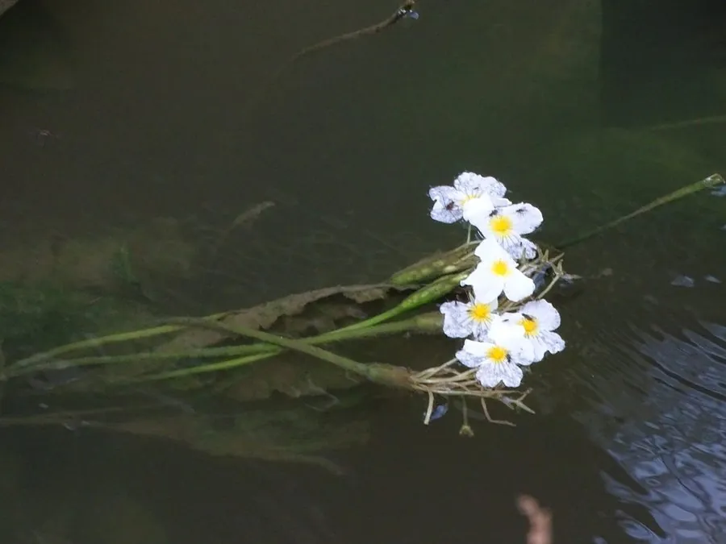

水生植物 · 植物界
海菜花 Ottelia acuminata

水鳖科多年生沉水草本，白色小花浮于水面，对水质要求极高，被称为“水质试金石”，是中国云南高原湖泊的珍稀植物。
- 分类
- 门被子植物门纲木兰纲目泽泻目科水鳖科属水车前属
- 栖息环境
- 高原湖泊、池塘、河沟的清澈静水，喜温暖、阳光充足
- 地理分布
- 原产中国云南、贵州、广西等地，以云南高原湖泊最为著名
- 保护级别
- 暂无评估；中国国家二级重点保护野生植物
物种志
海菜花为水鳖科水车前属多年生沉水草本，具匍匐根状茎。叶片基生，带状或披针形，沉于水中，随水波摇曳。花单性，雌雄异株，白色，花瓣 3 枚，有细长花梗把花托出水面，花期 5–10 月；果实为蒴果。
海菜花原产中国西南的云南、贵州、广西等地，生于高原湖泊、池塘和河沟中，喜温暖、阳光充足和水质清澈的环境，对污染极为敏感，水体一旦富营养化就难以生存，因此被称为“水质试金石”。它白色的花浮在水面，成片开放时十分美丽；嫩茎叶可作蔬菜，云南大理一带素有食用海菜花的习惯。由于水体污染和栖息地破坏，野生海菜花资源减少，已被列入国家重点保护野生植物名录。
形态与习性
- 株高沉水草本，花梗可把花托出水面
- 花期5–10 月，花白色，3 瓣
- 果期花后结蒴果
- 光照喜充足阳光，需水质清澈
- 水分静水，水深 0.5–2 米
- 土壤湖底淤泥
- 繁殖根状茎分株与种子繁殖
- 主要用途水质指示植物、观赏、嫩茎叶食用
趣味知识
- 海菜花对水质极为敏感，水体一旦污染就难以生存，被称为“水质试金石”。
- 它白色的花浮在水面，成片开放时非常美丽，是云南高原湖泊的标志性植物。
- 云南大理一带素有食用海菜花嫩茎叶的习惯，但野生植株受保护，不可随意采食。
- 海菜花雌雄异株，靠细长花梗把花托出水面开放。